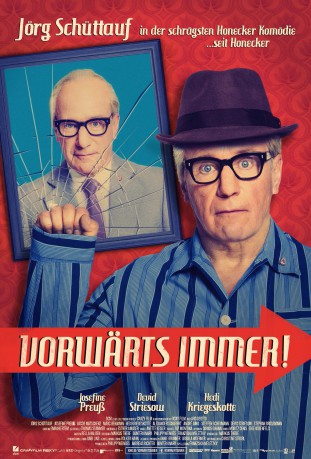
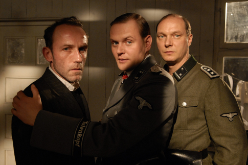
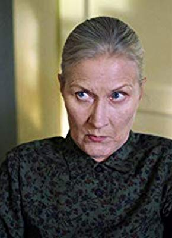

#8724 Vorwärts immer!
 
 IMDB-Wertung: 5.4 / 10
IMDB-Wertung: 5.4 / 10  Metascore: 0
Metascore: 0 
Berlin, 9. Oktober 1989: Anne lebt mit ihrem Vater, dem Schauspieler Otto Wolf, alleine in Ost-Berlin – ihre Mutter ist in den Westen gegangen. Auch Anne hat große Pläne als Schauspielerin, kann sich das aber nicht mehr in der politischen Enge der DDR vorstellen. Ihr Plan steht fest. Mit einem gefälschten Westpass will auch sie „rübermachen“. Und sie ist schwanger, ausgerechnet von Matti, dem Sohn von Ottos ärgsten Feind und Schauspielerkollegen Harry Stein. Als Anne mit dem Revolutionären August nach Leipzig zur Demonstration fährt, um sich den Pass zu besorgen, Otto am Theater das geheime Stück „Vorwärts immer!“ probt, in dem er Honecker spielt, weiß Otto nur noch einen Ausweg. Als der „echte“ Honecker will er im ZK den Schießbefehl in Leipzig stoppen, um das Leben seiner Tochter zu retten. Ein waghalsiges und turbulentes Spiel auf Leben und Tod beginnt – in dem sich nicht nur Anne und August näher kommen, sondern auch Otto als Erich Honecker und die echte Margot…
Jahr: 2017
Dauer: 97 Minuten
FSK: 12
Land: Deutschland Studio: DCM Film DistributionTonspuren:
Untertitel: Deutsch,
Auflösung: 1080p (1920x1036) Größe: 6768 MB
Genre: Komödie
Regisseur: Franziska Meletzky
Drehbuch: D.W. Brown
Soundtrack: Moritz Denis, Eike Hosenfeld
Darsteller:
- Josefine Preuß als Anne Wolf
 Marc Benjamin als Matti Stein
Marc Benjamin als Matti Stein- Alexander Schubert als Egbert Rauch / Egon Krenz
- Stephan Grossmann als Theodor Dombrich
-  Devid Striesow als Harry Stein
- Damir Cosic als Sasha Kurlensky
- Tom Keune als Wolf-Dieter Seifert
- Jörg Schüttauf als Otto Wolf / Erich Honecker
- Jacob Matschenz als August
-  Hedi Kriegeskotte als Margot Honecker
- Steffen Scheumann als Boris Kelm
- André Jung als Hans Götze / Erich Mielke
- Till Florian Beyerbach als Gruppenführer
- Samia Muriel Chancrin als Stasifrau Birgit Müller
- Christoph Glaubacker als Stefan Schäfer
- Charles Lemming als Sicherheitsmann
- Robert Menke als Rettungssanitäter
- Thomas Mill als Werner Erxleben
- Anabel Möbius als Nora Wolf
- Johannes Schedl als Wachsoldat Christian Böttger
- Stephan Taubert als Demonstrant (scenes deleted)
- Johannes Richard Voelkel als Thomas Wittke
- Arne Wichert als
- Robert Carlo Ceder als Polizist (Leipzig) (uncredited)
- Horst Rauschenberger als Demonstrant (uncredited)
Datei: X:\2017(N-Z)\Vorwärts immer! (2017, FSK12, 1920x1036).mkv seit 25.04.2018
Festplatte: HD 2017(A-Z)-2018(A-F)
 Es gibt insgesamt 170 Filme in der Gruppe '2017(N-Z)'
Es gibt insgesamt 170 Filme in der Gruppe '2017(N-Z)'